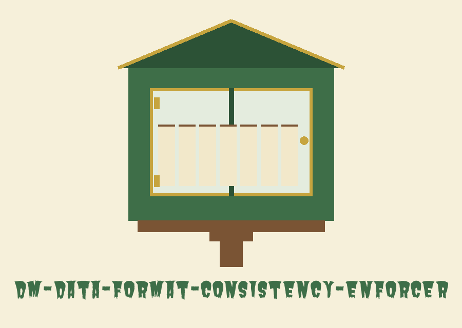

dm-data-format-consistency-enforcer: The Little Free Library Carpenter
dm-data-format-consistency-enforcer: The Little Free Library Carpenter names itself in that form throughout this page. The page is built as a set of shelves inside one tall case. The ground is dust cream, shelf panels are dust cream warmed a step, headings are in the embed face in library green, body text is in the text face in dark brown black, leather rules divide the shelves, and gilt is saved for shelf numbers, the current marker, and hinge points on the case doors.

Format Kind Value to Reformat, Optional
Five Kinds, One Shape Each
Swapped, Not Bent
Nothing Supplied, Values Made
Shelf 1. The job in one breath
Give this program a value and a format kind, and it hands the value back wearing the one shape that kind is supposed to wear.
Shelf 2. Five kinds, one shape each
Phone: the supplied digits are kept and regrouped. A ten digit number takes a bracketed area form, and an eleven digit number beginning with 1 takes an international prefix form. The pattern drawing uses letter placeholders only: (AAA) BBB-CCCC, with a +1 prefix in the eleven digit case.
Zip code: the supplied letters and digits are kept. A nine digit code takes a split form with a dash before its last four digits. The pattern drawing lives in the record block below.
Email: a value that is an email address passes through as it arrived, untouched.
Social security number: nine supplied digits are kept and printed in three groups. The pattern drawing uses letter placeholders only: AAA-BB-CCCC.
Credit card number: between twelve and nineteen supplied digits are kept and regrouped in fours with dashes between the groups.
No telephone number, postal code, address, or card digits belonging to anyone appear on this plate or anywhere on this site. Pattern drawings use letter and digit placeholders only.
Shelf 3. Swapped, not bent
A value of the wrong kind for its named format is not bent into shape. It is replaced by a made value in that format, and the run logs that a substitute came back. The given illustrations are text that is not an email address offered under the email format, and a social security number carrying other than nine digits. Beside this, at the same size, the empty handed case: supply nothing, and the program makes values in the named format, as many as the count control asks for.
Shelf 4. The workshop door: install, corrected
git clone https://github.com/ShadowGuard-AI/dm-data-format-consistency-enforcer
Admission: this site corrected that line. The organisation appears here in its hyphenated spelling, ShadowGuard-AI. The README as fetched spells the organisation without its hyphen in this line, and that fault is preserved in the record block below and counted in the identity tally. The correction is made here in daylight and labelled, rather than planed quietly into the historical copy.
Shelf 5. The invocation skeleton on the bench
./dm-data-format-consistency-enforcer [params]
Program call first. Then a placeholder standing where the format kind belongs, a placeholder standing where the optional value belongs, and room for the two options after them. The README demonstrates no invocation beyond that skeleton. Personal material is barred from this plate and from the entire site.
Shelf 6. Inventory of the controls
Taken in README order, defaults pinned to the items that have them. Help flag: -h, show help message and exit. Format kind: format_type, one of phone_number, zip_code, email, ssn, credit_card_number. Input value: input_data, the value to reformat, optional. Locale: --locale, the locale to use, illustrated by the codes en_US and de_DE displayed as codes and nothing more, default en_US. Count: --count, the number of formatted values to generate when no input data is provided, default 1.
Shelf 7. Rights, and the case shut
In the record block underneath, readers can inspect the README rights line exactly as fetched: Copyright (c) ShadowGuardAI, with the organisation in its unhyphenated form as printed. Alongside that inspection copy, the separate document fact in miniature: the LICENSE file is built to MIT terms, and its ownership line runs with a public pen name first, a bracketed variant joining a given name to a single initial second, and the account handle last. That construction is described here, never transcribed, and the single initial is not opened.
The preserved README record
 # dm-data-format-consistency-enforcer Ensures data within a column or field adheres to a consistent format (e.g., phone numbers, zip codes) by standardizing the format of the supplied value according to a defined pattern. - Focused on Tools designed to generate or mask sensitive data with realistic-looking but meaningless values ## What happens to a supplied value When you supply a value, the tool reformats that value and keeps its content where the format allows it: - `phone_number`: the supplied digits are kept and regrouped. A 10 digit number prints as `(AAA) BBB-CCCC`, and an 11 digit number starting with 1 prints with a `+1` prefix. - `zip_code`: the supplied letters and digits are kept. A 9 digit code prints as `12345-6789`. - `email`: a supplied value that is an email address is carried through unchanged. - `ssn`: the supplied 9 digits are kept and printed as `AAA-BB-CCCC`. - `credit_card_number`: the supplied digits (12 to 19 of them) are kept and regrouped in fours, separated by dashes. Substitution cases: a supplied value that does not match the kind of data the named format holds cannot be reformatted without inventing content. For example, text that is not an email address supplied under `email`, or an SSN with other than 9 digits, is replaced with a freshly generated value in the named format, and the run logs that a substitute was returned. When no value is supplied at all, the tool generates values in the named format, as many as `--count` asks for. ## Install `git clone https://github.com/ShadowGuardAI/dm-data-format-consistency-enforcer` ## Usage `./dm-data-format-consistency-enforcer [params]` ## Parameters - `-h`: Show help message and exit - `format_type`: One of phone_number, zip_code, email, ssn, credit_card_number. - `input_data`: The value to reformat (optional). See the section above for which formats preserve its content and when a generated substitute is returned instead. - `--locale`: The locale to use (e.g., en_US, de_DE). Default is en_US. - `--count`: The number of formatted values to generate when no input data is provided. Default is 1. ## License Copyright (c) ShadowGuardAI
A note from the bench after the record. The block above is left alone once it has been checked against the fetched README. Its clone line and its closing rights line both carry the hyphenless organisation spelling, and both stay that way inside the block. A visitor who wants the hyphenated spelling should look at shelf four, where the correction is made in daylight and labelled.